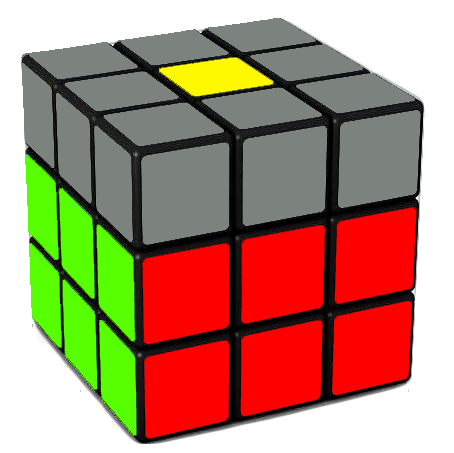

Hello everyone, today, I'm going to teach you how to solve a 3x3 Rubik's Cube. You might have read other tutorials before and started raging because of how complex they are, but this tutorial is nothing like that. I made this tutorial incredibly beginner-friendly, so someone like you can figure this out in no time. I have a YouTube channel, named CubeRind, where I have this tutorial in video format, in case you prefer that. Click here to find my channel.
The next step is to solve the white corners, to finish the first layer.

This would look something like this. You see here we now have the entire white side but also just as importantly we have the entire layer, meaning that the sides are all perfectly solved. And they're still matching with the corresponding centre. So the first step of this is to pick any white corner on the top layer. Now we look at the other two colours of this corner. For example, it could be red and green. Next, what we're going to do is do U-layer turns until we match with the red and green centre. What you're going to do is hold this cube so that the piece that you want to put on the white side is facing on the right side with the white side on the bottom. Then, you're going to do this very simple algorithm. The algorithm is right clockwise, so R, up clockwise, so U, right counterclockwise or anticlockwise, so R’ and U anti-clockwise, so U’. It might not be properly solved yet, but in that case you just have to do it again until it's properly solved. So R U R’ U’. Keep on doing this algorithm until the corner piece is properly solved. Your case may vary, maybe you need to do this algorithm twice, maybe you need to do it five times. You might have a different amount of times you need to do this algorithm, but the maximum amount of times you need to do it is five. So if it takes more than five times, you know you did something wrong. Sometimes it'll be less but it'll never be more than five. Repeat this process for all other white corners on the top layer.
It is possible that you have no more white corners in the top layer, yet the white layer is still not solved yet. You might think that it's solved, but actually some of them might not be solved. If the white side is not fully solved yet, then pick any white corner on the bottom layer that's not solved. What you have to do is the same thing that you did before, hold it on the right and do the same algorithm. R U R’ U’. Now you see you brought it to the top layer, now match it with your respective colour centres. Now do the same algorithm. Repeat this step from here. If your white layer is done, congrats! You completed step 2.
Now continue to hold the white side on the bottom. I'll show you how the cube will look after you do the step.
The cube would look something like this, you would have all four middle layer edges solved as well as the white side still solved. This step is really easy as you only just put four pieces in the correct place, those are the four middle layer edges. The first thing you need to do is just pick any edge on the top layer that does not have yellow on it. Now what you want to do is you want to match this front colour with its centre. So I'll just do U-turns until it matches, this is sort of like what we did when we made the white cross. For example, if I chose the blue and orange edge and the blue colour was facing the front, then I would do U-layer turns until the edge is matching with the blue centre, now you need to look at the top colour of the edge. In the example, it is orange. Now since I chose the blue and orange piece, it has to go between the blue and orange centres. Now since I am holding the yellow side up and blue side front, orange is on the left side. So I am going to do the left side algorithm, the algorithm goes U’ L’ U L U F U’ F’ and now the edge should be in the right place. Now, choose another edge. For example, I could choose the blue and red edge piece next. If, for example, the blue colour is in front, I would do U-layer turns until it matches with the blue centrepiece. Since I am still holding yellow on top and blue in the front, red is on the right side. So, I need to do the right side algorithm, which is U R U’ R’ U’ F’ U F. Repeat this process for all edges that don't have yellow on them.
Next, we're going to solve the yellow cross.

After the end of this step, your cube will look something like this. You will have the yellow cross solved and both the first and middle layers will still be solved.
If you've already got the yellow cross solved which is basically what we did with the white cross at the beginning except you do not need the side colours to match, so if you got this solved already then you can skip what I say and go to step 5. But if you don't have that, then you can read this part now. So if you don't have a yellow cross you've either got a line, inverted L or dot.

This is a dot case. You can see there is a yellow dot in the centre and no yellow edge pieces facing up.

This is a line case. You can see that there are 2 yellow edge pieces facing up making a line.

This is an inverted L case. You can see that there are 2 yellow edge pieces facing up making an inverted L shape.
So if you have a dot just do this algorithm, F U R U’ R’ F’, I found this algorithm easy to remember because you can say fur urf and that spells the algorithm out, so if you did that you would get the line case. Make sure you hold it horizontally and do the same algorithm, fur urf, F U R U’ R’ F’. Now we got the inverted L, make sure we're holding it in the top left and then do the same algorithm, F U R U’ R’ F’ and then you'll get the yellow cross, so if you didn't start with a dot, don't worry you can just do the same algorithm with either the horizontal bar or the inverted L. If you have the inverted L, make sure you hold the cube so that the L is in the top left corner just like in the example image.
Next, we need to solve the corners. What you're gonna do is you're gonna change how you are holding the cube and put the yellow side on the bottom. Next, we're going to see a yellow corner that isn't properly solved, so we don't care if it's matching with the centres yet or not as long as it's properly facing the top it's fine. Just pick one of them and like we did before, hold it on the right and do the same algorithm we did at the beginning for the first layer. R U R’ U’, you might think you messed everything up, but don't worry, just keep on doing it until it's solved properly. Now this part is very important, once you solve one of the yellow corner pieces, do not change how you are holding the cube. Just do D-turns to put the next unsolved yellow edge on the right side.

Repeat this process until your cube looks something like this.
Lastly, we're going to permute the last layer, once you finish this step you will solve the entire cube, congratulations! But not so fast, you have to complete this step first. So what you need to do in this step is to look for some headlights.

By headlights, I mean this. The 2 blue colours that I circled make a headlight. Okay so you either have 4 headlights in which case you can skip this paragraph, you could have 1 or you could have none. I'm going to tell you what you do if you have none first, in this case, you have no headlights, none on either side. So in this case, just hold the cube anyway so long as the white side is on the bottom and yellow is on top. Now we're gonna do this algorithm, R’ F R’ B2 R F’ R’ B2 R2. Now you have one set of headlights, now I'm going to show you what to do at this stage. If you have one set of headlights, match the headlights with its side and then hold the cube so that that side is at the back. Yellow should still be on top. Then, do the same algorithm, R’ F R’ B2 R F’ R’ B2 R2 and you will get 4 headlights.
Now the last part of this step is to fix the edges, you may be lucky and skip this step, in which case, congratulations, you solve the cube! But to truly learn how to solve it you need to learn this part as well. The last part is to put these edges in the right place. First, match up the headlights with their correct sides. If you already have 1 side solved, go to the next paragraph. If not, continue reading this. So what you're gonna do is you're just gonna do this algorithm, F2 U then you go L and R’ but I like to think of it as you move both of these down, then F2, you do L’ and R but I'll think of it that you move both of these up, then U and F2, now that should have solved one of your sides.
Now what you're gonna do is make sure the solved side is matching to make the entire side and then hold it at the back. Then you're gonna do the same algorithm you did in the last part of this step. In case you skipped that part, here's the algorithm, F2 U L R’ F2 L’ R U F2. Now, either your cube is solved, or you need to do this algorithm one more time.
Congratulations! Thank you so much for reading this, if you subscribe to my YouTube channel, that would be extremely helpful. Here is the link: https://www.youtube.com/channel/UC6LgYLa1oSgTxxctR0rujdg/videos?sub_confirmation=1